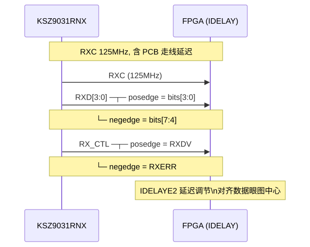
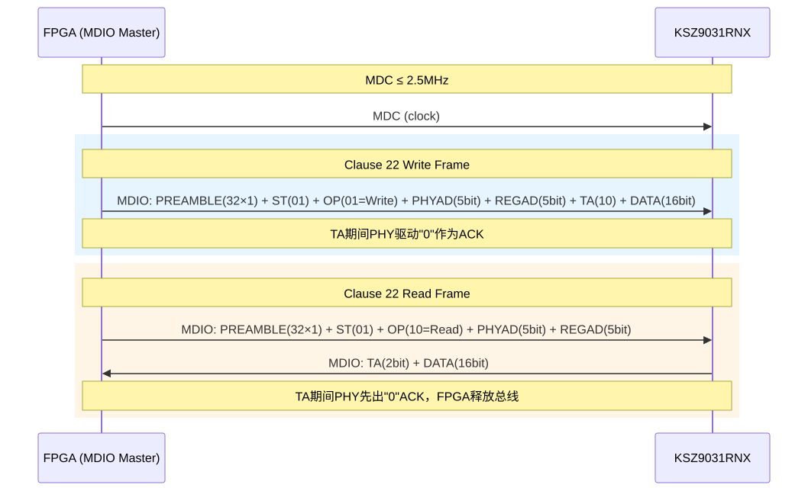
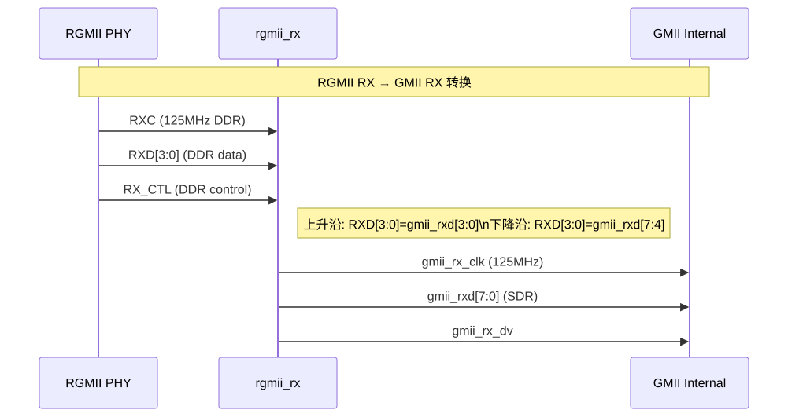
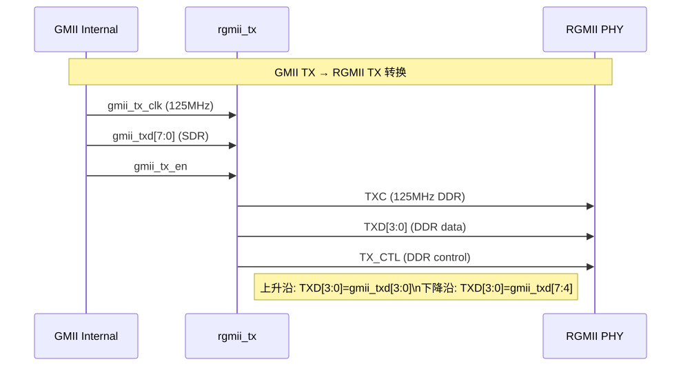
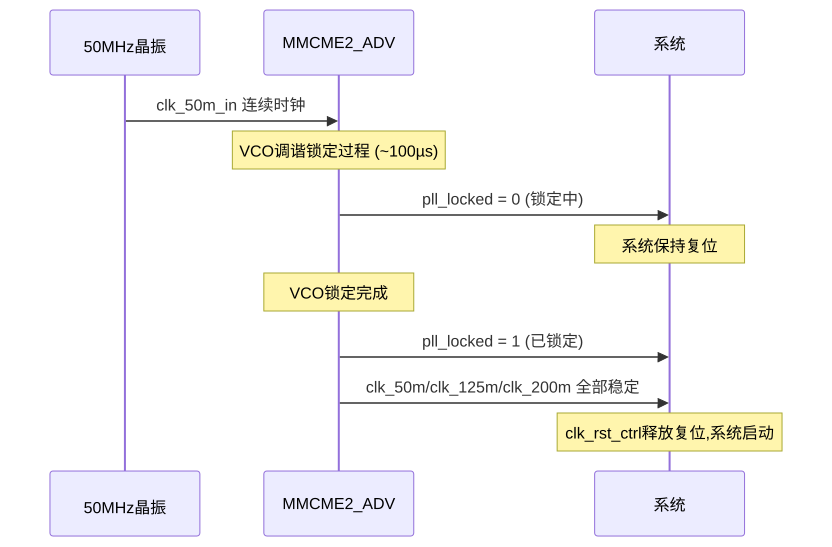
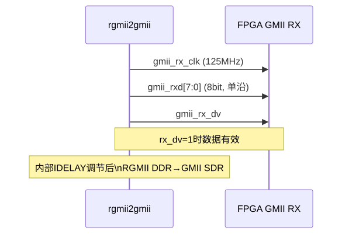
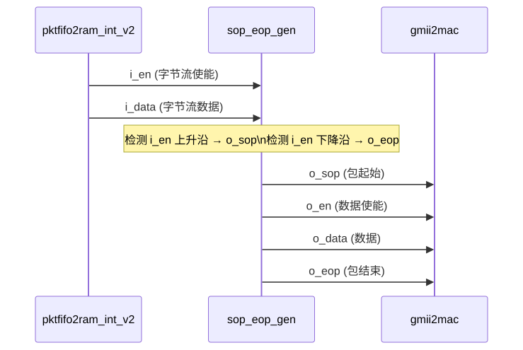
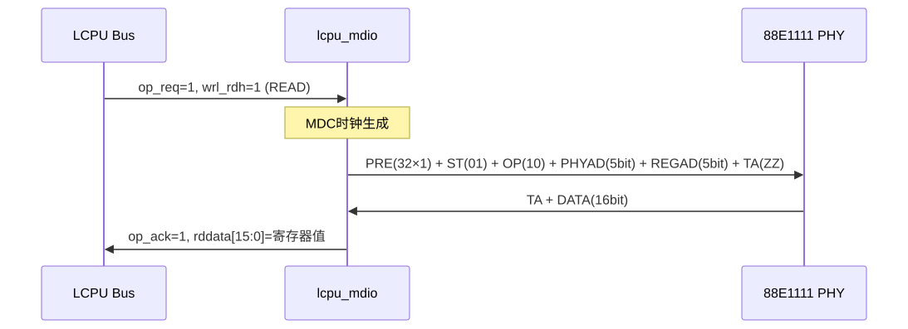
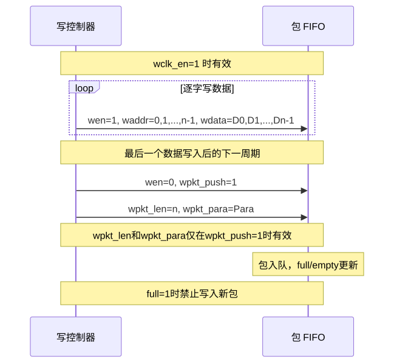

| 项目 | 内容 |
|---|---|
| 产品名称 | 基于RiscV@FPGA的WebServer |
| 密级 | 内部 |
| 总页数 | 78 |
版权所有 侵权必究
| 日期 Date | 修订版本 Revision Version | 修改描述 Change Description | 作者 Author |
|---|---|---|---|
| 2026-06-29 | ED001R01 | 初始版本 | LinkReal |
本文档详细介绍基于RiscV@FPGA的WebServer的FPGA逻辑实现原理，包括模块划分、接口信号定义、内部实现说明、表项/寄存器定义以及RAM资源使用情况。
该设计在Xilinx Artix-7 FPGA上集成RISC-V软核处理器和千兆以太网MAC，实现一个完整的FPGA Web服务器系统。
PHY["88E1111 PHY"] <-->|"RGMII"| RGMII
PHY <-->|"MDIO"| MDIO_TOP
UART["CP2102\nUSB-UART"] <--> CPU
Flash["W25Q128\nSPI Flash"] -.->|"配置"| FPGA
RGMII <-->|"GMII (内部)"| Wrapper
PLL -->|"50/125/200MHz"| Top
RST -->|"reset_l_synced"| Top
CPU <-->|"LCPU Bus"| REG
REG -->|"MDIO SubBus"| MDIO
MDIO <-->|"MDIO"| PHY
MAC <-->|"125MHz GMII"| RGMII
CH <-->|"125MHz MAC"| MAC
CH <-->|"50MHz CPU"| REG
style FPGA fill:#e8f5e9
style Top fill:#fff3e0
style Wrapper fill:#e3f2fd

图2 数据流处理路径REG["reg_webserver\n寄存器"] -.->|"配置"| CH_RX
REG -.->|"配置"| CH_TX
CPU_RD <-->|"LCPU Bus"| REG
style PHY fill:#ffccbc
style CPU_RD fill:#c8e6c9
style CPU_WR fill:#c8e6c9

图3 FPGA内部模块层级树WRAP --> TOD["tod \n(时间计数器)"]
WRAP --> TMR["interval_timer \n(秒定时器)"]
WRAP --> FBT["fpga_build_time \n(编译时间戳)"]
WRAP --> CPU["lcpu_riscv_wrapper"]
WRAP --> REG["reg_webserver"]
WRAP --> MDIO["lcpu_mdio"]
WRAP --> MAC["gmii2mac"]
WRAP --> CDC["cdc_bus_sync/_vec"]
WRAP --> CH["cpu_channel"]
CPU --> LCPU["lcpu_top / lcpu_bfm"]
CPU --> RISCV["riscv32_top"]
CPU --> MERGE["lcpu_merge"]
CH --> R2F["ram2pktfifo_int"]
CH --> PFIFO["package_fifo_v2 x2"]
CH --> F2R["pktfifo2ram_int_v2"]
CH --> SOP["sop_eop_gen"]

PLL_C["pll_50m\n50MHz in"] -->|"50MHz"| CLK50
PLL_C -->|"125MHz"| CLK125
PLL_C -->|"200MHz"| CLK200
CLK125 <-->|"CDC (Gray/ReqAck)"| CLK50

| 信号名 | 位宽（Bits） | IO | 说明 |
|---|---|---|---|
| RGMII 接收接口 | |||
| RXC | 1 | I | RGMII接收时钟（125MHz） |
| RX_CTL | 1 | I | RGMII接收控制（DV+ERR） |
| RXD | 4 | I | RGMII接收数据（DDR） |
| RGMII 发送接口 | |||
| TXC | 1 | O | RGMII发送时钟（125MHz） |
| TX_CTL | 1 | O | RGMII发送控制（EN+ERR） |
| TXD | 4 | O | RGMII发送数据（DDR） |
FPGA -->|"TXC, TX_CTL, TXD[3:0]"| PHY
PHY -->|"RXC, RX_CTL, RXD[3:0]"| FPGA

图6 RGMII接收时序Note over PHY,FPGA: RGMII RX — 125MHz DDR
PHY->>FPGA: RXC (125MHz clock)
PHY->>FPGA: RXD[3:0] + RX_CTL (DDR)
Note right of FPGA: 上升沿采样 RXD[3:0] (低4bit)\n下降沿采样 RXD[3:0] (高4bit)\nRX_CTL: 上升沿=DV, 下降沿=DV xor ERR

| 信号名 | 位宽（Bits） | IO | 说明 |
|---|---|---|---|
| uart_rx | 1 | I | UART接收（FPGA侧） |
| uart_tx | 1 | O | UART发送（FPGA侧） |
| 信号名 | 位宽（Bits） | IO | 说明 |
|---|---|---|---|
| SPI接口（FPGA配置模式） | |||
| CCLK | 1 | I | 配置时钟 |
| DIN/D0 | 1 | I | 配置数据输入 |
| DOUT/D1 | 1 | O | 配置数据输出 |
| CS | 1 | I | 片选 |
| WP/D2 | 1 | I | 写保护 |
| HOLD/D3 | 1 | I | 保持 |
| 属性 | 值 |
|---|---|
| 模块名称 | xilinx_xc7a35tfgg484_webserver_top |
| 文件路径 | fpga_webserver/rtl/xilinx_xc7a35tfgg484_webserver_top.v |
| 目标器件 | XC7A35T-FGG484-2 |
CLK_IN["clk_50m_in"] --> PLL
PLL -->|"50/125/200MHz"| TOP
RESET["reset_l"] --> RST
RST -->|"reset_l_synced"| TOP
PHY["88E1111"] <-->|"RGMII"| RGMII
RGMII <-->|"GMII"| WRAP
UART["UART"] <--> WRAP
MDIO["MDIO"] <--> WRAP
WRAP --> LED["led_o[3:0]"]
style TOP fill:#e3f2fd

| 信号名 | 位宽（Bits） | IO | 说明 |
|---|---|---|---|
| 系统接口 | |||
| clk_50m_in | 1 | I | 系统输入时钟（50MHz） |
| reset_l | 1 | I | 系统复位（低有效） |
| UART接口 | |||
| uart_rx | 1 | I | UART接收数据 |
| uart_tx | 1 | O | UART发送数据 |
| RGMII接口 | |||
| rgmii_reset_l | 1 | O | PHY复位信号（低有效） |
| rgmii_rxc | 1 | I | RGMII接收时钟 |
| rgmii_rx_ctl | 1 | I | RGMII接收控制 |
| rgmii_rxd | 4 | I | RGMII接收数据 |
| rgmii_txc | 1 | O | RGMII发送时钟 |
| rgmii_tx_ctl | 1 | O | RGMII发送控制 |
| rgmii_txd | 4 | O | RGMII发送数据 |
| MDIO接口 | |||
| eth0_mdc | 1 | O | MDIO管理时钟 |
| eth0_mdio | 1 | IO | MDIO管理数据 |
| 指示接口 | |||
| led_o | 4 | O | LED指示输出（低有效） |
| 模块控制参数 | |||
| sim_mod | parameter | integer | 仿真模式：0=综合，1=仿真 |
| xilinx_idelay_value | parameter | integer | IDELAY延时值（16） |
| riscv_inst_en | parameter | integer | RISC-V使能（1=使能） |
| 属性 | 值 |
|---|---|
| 模块名称 | rgmii2gmii |
| 文件路径 | ip_common/rtl/rgmii2gmii.v |
RGMII_IN["rgmii_rxc\nrgmii_rx_ctl\nrgmii_rxd"] --> RX
RX -->|"gmii_rx_clk\ngmii_rx_dv\ngmii_rxd"| GMII_RX["GMII RX (内部)"]
GMII_TX["GMII TX (内部)"] -->|"gmii_tx_clk\ngmii_tx_en\ngmii_txd"| TX
TX -->|"rgmii_txc\nrgmii_tx_ctl\nrgmii_txd"| RGMII_OUT["RGMII TX"]

| 信号名 | 位宽（Bits） | IO | 说明 |
|---|---|---|---|
| 系统接口 | |||
| reset_l | 1 | I | 复位（低有效） |
| clk_200m | 1 | I | 200MHz参考时钟 |
| GMII RX 接口 | |||
| gmii_rx_clk | 1 | O | GMII接收时钟（125MHz） |
| gmii_rx_dv | 1 | O | GMII接收数据有效 |
| gmii_rxd | 8 | O | GMII接收数据 |
| GMII TX 接口 | |||
| gmii_tx_clk | 1 | I | GMII发送时钟（125MHz） |
| gmii_tx_en | 1 | I | GMII发送使能 |
| gmii_txd | 8 | I | GMII发送数据 |
| RGMII 接口 | |||
| rgmii_rxc | 1 | I | RGMII接收时钟 |
| rgmii_rx_ctl | 1 | I | RGMII接收控制 |
| rgmii_rxd | 4 | I | RGMII接收数据 |
| rgmii_txc | 1 | O | RGMII发送时钟 |
| rgmii_tx_ctl | 1 | O | RGMII发送控制 |
| rgmii_txd | 4 | O | RGMII发送数据 |
| 模块控制参数 | |||
| Xilinx_IDELAY_VALUE | parameter | integer | IDELAY延时值 |
| vendor | parameter | string | 器件厂商 |
Note over RGMII,GMII: RGMII RX → GMII RX 转换
RGMII->>RX: RXC (125MHz DDR)
RGMII->>RX: RXD[3:0] (DDR data)
RGMII->>RX: RX_CTL (DDR control)
Note right of RX: 上升沿: RXD[3:0]=gmii_rxd[3:0]\n下降沿: RXD[3:0]=gmii_rxd[7:4]
RX->>GMII: gmii_rx_clk (125MHz)
RX->>GMII: gmii_rxd[7:0] (SDR)
RX->>GMII: gmii_rx_dv

图10 GMII→RGMII TX转换时序Note over GMII,RGMII: GMII TX → RGMII TX 转换
GMII->>TX: gmii_tx_clk (125MHz)
GMII->>TX: gmii_txd[7:0] (SDR)
GMII->>TX: gmii_tx_en
TX->>RGMII: TXC (125MHz DDR)
TX->>RGMII: TXD[3:0] (DDR data)
TX->>RGMII: TX_CTL (DDR control)
Note right of TX: 上升沿: TXD[3:0]=gmii_txd[3:0]\n下降沿: TXD[3:0]=gmii_txd[7:4]

| 特征 | 内容 |
|---|---|
| 子模块实例 | 2个：rgmii_rx、rgmii_tx |
| 跨时钟域 | 3个时钟域：RGMII_RXC、GMII_TX_CLK、CLK_200M |
| 特殊原语 | IDELAY、ODDR（Xilinx平台） |
| 时钟关系 | RGMII=125MHz DDR，GMII=125MHz SDR |
| 属性 | 值 |
|---|---|
| 模块名称 | clk_rst_ctrl |
| 文件路径 | ip_common/rtl/clk_rst_ctrl.v |

| 信号名 | 位宽（Bits） | IO | 说明 |
|---|---|---|---|
| clk | 1 | I | 系统时钟 |
| async_rst_l | 1 | I | 异步复位输入（低有效） |
| pll_locked | 1 | I | PLL锁定指示（高有效） |
| rst_l | 1 | O | 同步释放复位输出（低有效） |
| 模块控制参数 | |||
| NUM_LOCK_INPUTS | parameter | integer | PLL锁定信号数量 |
| 属性 | 值 |
|---|---|
| 模块名称 | pll_50m |
| 文件路径 | ip_vendor/pll_50m.v（Xilinx MMCM IP封装） |

| 信号名 | 位宽（Bits） | IO | 说明 |
|---|---|---|---|
| inclk0 | 1 | I | 输入时钟（50MHz） |
| c0 | 1 | O | 输出时钟0（50MHz） |
| c1 | 1 | O | 输出时钟1（125MHz） |
| c2 | 1 | O | 输出时钟2（200MHz） |
| locked | 1 | O | PLL锁定指示（高有效） |
| 属性 | 值 |
|---|---|
| 模块名称 | webserver_wrapper |
| 文件路径 | fpga_webserver/rtl/webserver_wrapper.v |
GMII_IN["GMII RX"] --> MAC_M
MAC_M -->|"Packet Stream"| CH_M
CH_M -->|"CPU RD"| REG_M
CH_M -->|"CPU WR"| REG_M
REG_M <-->|"LCPU Bus"| CPU_M
REG_M -->|"MDIO SubBus"| MDIO_M
MDIO_M <-->|"MDIO"| PHY_M["PHY"]
MAC_M -->|"Stats\n125MHz"| CDC_V
CDC_V -->|"Stats\n50MHz"| REG_M
style WRAP fill:#e8eaf6
style CLK_GRP fill:#fff9c4
style CPU_GRP fill:#c8e6c9
style BUS_GRP fill:#b3e5fc
style ETH_GRP fill:#ffccbc
style CDC_GRP fill:#e1bee7

| 信号名 | 位宽（Bits） | IO | 说明 |
|---|---|---|---|
| 系统接口 | |||
| reset_l | 1 | I | 复位（低有效） |
| clk_50mhz | 1 | I | 50MHz时钟 |
| clk_125mhz | 1 | I | 125MHz时钟 |
| UART接口 | |||
| uart_rx | 1 | I | UART接收 |
| uart_tx | 1 | O | UART发送 |
| MDIO接口 | |||
| eth0_mdc | 1 | O | MDIO时钟 |
| eth0_mdio | 1 | IO | MDIO数据 |
| GMII RX接口 | |||
| gmii_rx_clk | 1 | I | GMII接收时钟 |
| gmii_rx_dv | 1 | I | GMII接收数据有效 |
| gmii_rx_err | 1 | I | GMII接收错误 |
| gmii_rxd | 8 | I | GMII接收数据 |
| GMII TX接口 | |||
| gmii_txd | 8 | O | GMII发送数据 |
| gmii_tx_en | 1 | O | GMII发送使能 |
| gmii_tx_err | 1 | O | GMII发送错误 |
| 指示接口 | |||
| led | 4 | O | LED输出 |
| 模块控制参数 | |||
| sim_mod | parameter | integer | 仿真模式 |
| uart_baud_rate | parameter | integer | UART波特率（115200） |
| cpu_vendor | parameter | string | CPU厂商（xilinx/intel/uart） |
| riscv_inst_en | parameter | integer | RISC-V使能 |
| cpu_buf_addr_width | parameter | integer | CPU缓冲区地址宽度（12） |
| cpu_buf_data_width | parameter | integer | CPU缓冲区数据宽度（8） |
| 特征 | 内容 |
|---|---|
| 子模块实例 | 14个（含3个cdc_bus_sync实例） |
| 时钟域 | 2个：clk_50mhz（CPU/寄存器）、clk_125mhz（以太网MAC） |
| 跨时钟域 | 4路CDC：eth stats (GRAY×7)、filter_data (REQACK)、filter_offset (REQACK)、drop_cnt (GRAY) |
| LCPU总线地址空间 | 16bit地址，寄存器文件和MDIO子总线 |
| 属性 | 值 |
|---|---|
| 模块名称 | tod |
| 文件路径 | ip_common/rtl/tod.v |

| 信号名 | 位宽（Bits） | IO | 说明 |
|---|---|---|---|
| clk | 1 | I | 时钟 |
| reset_l | 1 | I | 复位（低有效） |
| snapshot | 1 | I | 快照触发 |
| counter_live | 64 | O | 实时计数器值 |
| time_out | 64 | O | 快照输出 |
| 模块控制参数 | |||
| counter_mode | parameter | integer | 计数模式（1=标准） |
| step | parameter | integer | 每时钟递增步长（20） |
REG->>TOD: get_local_time_ind (pulse)
Note over TOD: 锁存counter_live → time_out
TOD-->>REG: local_time_l[31:0]
TOD-->>REG: local_time_h[31:0]
REG-->>BUS: 寄存器读 (addr 0x7/0x8)

| 属性 | 值 |
|---|---|
| 模块名称 | interval_timer |
| 文件路径 | ip_common/rtl/interval_timer.v |

| 信号名 | 位宽（Bits） | IO | 说明 |
|---|---|---|---|
| clk | 1 | I | 时钟 |
| reset_l | 1 | I | 复位（低有效） |
| event_out | 1 | O | 定时事件输出 |
| 模块控制参数 | |||
| counter_width | parameter | integer | 计数器位宽（26） |
| period_count | parameter | integer | 周期计数值（50000000） |
| output_mode | parameter | integer | 输出模式（0=toggle） |
| 属性 | 值 |
|---|---|
| 模块名称 | fpga_build_time |
| 文件路径 | ip_common/rtl/fpga_build_time.v |
| 属性 | 值 |
|---|---|
| 模块名称 | lcpu_riscv_wrapper |
| 文件路径 | fpga_cpu/rtl/lcpu_riscv_wrapper.v |
UART["UART RX/TX"] <--> LCPU
LCPU -->|"JTAG Bus"| MERGE
RISCV -->|"RISC-V Bus"| MERGE
MERGE -->|"统一LCPU Bus"| EXT["外部总线\n(req/rhwl/...)"]
PRAM["Program RAM\n接口"] <--> RISCV
PRAM <--> MERGE
style LCPU fill:#c8e6c9
style BFM fill:#fff9c4
style RISCV fill:#b3e5fc
style MERGE fill:#e1bee7

main.c：主程序入口，初始化TCP/IP栈http_server.c：HTTP请求解析和响应生成eth.c：以太网帧收发驱动uart.c：调试串口输出| 信号名 | 位宽（Bits） | IO | 说明 |
|---|---|---|---|
| 系统接口 | |||
| clk | 1 | I | 系统时钟（50MHz） |
| reset_l | 1 | I | 复位（低有效） |
| riscv_reset_l | 1 | I | RISC-V专用复位 |
| UART接口 | |||
| uart_rx | 1 | I | UART接收 |
| uart_tx | 1 | O | UART发送 |
| 程序RAM接口 | |||
| pram_wr | 1 | I | 程序RAM写使能 |
| pram_addr | instr_addr_width | I | 程序RAM地址 |
| pram_wdata | 32 | I | 程序RAM写数据 |
| pram_rdata | 32 | O | 程序RAM读数据 |
| LCPU Bus接口 | |||
| req | 1 | O | 总线请求 |
| rhwl | 1 | O | 读高/写低 |
| wdata | 32 | O | 写数据 |
| address | 32 | O | 地址 |
| ack | 1 | I | 应答 |
| rdata | 32 | I | 读数据 |
| 模块控制参数 | |||
| lcpu_type | parameter | string | LCPU类型 |
| riscv_inst_en | parameter | integer | RISC-V使能 |
| instr_addr_depth | parameter | integer | 指令地址深度 |
| enable_irq | parameter | integer | IRQ使能 |
| 属性 | 值 |
|---|---|
| 模块名称 | lcpu_top |
| 文件路径 | fpga_cpu/rtl/lcpu_top.v |
| 信号名 | 位宽（Bits） | IO | 说明 |
|---|---|---|---|
| clk | 1 | I | 时钟 |
| reset_l | 1 | I | 复位 |
| uart_rx | 1 | I | UART接收 |
| uart_tx | 1 | O | UART发送 |
| jtag_req | 1 | O | JTAG总线请求 |
| jtag_rhwl | 1 | O | JTAG读/写 |
| jtag_address | 32 | O | JTAG地址 |
| jtag_wdata | 32 | O | JTAG写数据 |
| jtag_rdata | 32 | I | JTAG读数据 |
| jtag_ack | 1 | I | JTAG应答 |
| 属性 | 值 |
|---|---|
| 模块名称 | lcpu_bfm |
| 文件路径 | fpga_cpu/rtl/lcpu_bfm.v |
| 信号名 | 位宽（Bits） | IO | 说明 |
|---|---|---|---|
| clk | 1 | I | 时钟 |
| reset_l | 1 | I | 复位 |
| EXEC | 1 | O | 执行命令 |
| RH_WL | 1 | O | 读/写 |
| ADDRESS | 32 | O | 地址 |
| WR_DATA | 32 | O | 写数据 |
| RD_DATA | 32 | I | 读数据 |
| OP_DONE | 1 | I | 操作完成 |
| 模块控制参数 | |||
| read_time_out | parameter | integer | 读超时周期 |
| delay_time | parameter | integer | 操作间延时 |
| script_file | parameter | string | 脚本文件路径 |
| 属性 | 值 |
|---|---|
| 模块名称 | riscv32_top |
| 文件路径 | fpga_cpu/rtl/riscv32_top.v |
PRAM["Program RAM\n接口"] <--> IRAM
CORE <--> REG_FILE
CORE --> LSU
LSU <--> BIU
BIU <-->|"LCPU Bus"| EXT_BUS["外部总线"]
CORE -->|"pc"| IRAM
IRAM -->|"指令"| CORE
style CORE fill:#ffccbc
style IRAM fill:#c8e6c9

| 信号名 | 位宽（Bits） | IO | 说明 |
|---|---|---|---|
| clk | 1 | I | 时钟 |
| reset_l | 1 | I | 复位 |
| req | 1 | O | 总线请求 |
| rhwl | 1 | O | 读/写 |
| wdata | 32 | O | 写数据 |
| address | 32 | O | 地址 |
| rdata | 32 | I | 读数据 |
| ack | 1 | I | 应答 |
| program_wr | 1 | I | 程序RAM写使能 |
| program_waddr | init_addr_width | I | 程序RAM写地址 |
| program_wdata | 32 | I | 程序RAM写数据 |
| program_rdata | 32 | O | 程序RAM读数据 |
| irq | 32 | I | 中断请求 |
| 模块控制参数 | |||
| instr_databits | parameter | integer | 指令数据位宽（32） |
| instr_ram_type | parameter | string | 指令RAM类型 |
| init_addr_depth | parameter | integer | 初始化地址深度 |
| enable_irq | parameter | integer | IRQ使能 |
| 属性 | 值 |
|---|---|
| 模块名称 | lcpu_merge |
| 文件路径 | fpga_cpu/rtl/lcpu_merge.v |

| 信号名 | 位宽（Bits） | IO | 说明 |
|---|---|---|---|
| clk | 1 | I | 时钟 |
| reset_l | 1 | I | 复位 |
| Port 1 (JTAG) | |||
| op_req_1 | 1 | I | Port1请求 |
| wrl_rdh_1 | 1 | I | Port1读/写 |
| wrdata_1 | 32 | I | Port1写数据 |
| address_1 | 32 | I | Port1地址 |
| op_ack_1 | 1 | O | Port1应答 |
| rddata_1 | 32 | O | Port1读数据 |
| Port 2 (RISC-V) | |||
| op_req_2 | 1 | I | Port2请求 |
| wrl_rdh_2 | 1 | I | Port2读/写 |
| wrdata_2 | 32 | I | Port2写数据 |
| address_2 | 32 | I | Port2地址 |
| op_ack_2 | 1 | O | Port2应答 |
| rddata_2 | 32 | O | Port2读数据 |
| 合并输出 | |||
| op_req | 1 | O | 合并后请求 |
| wrl_rdh | 1 | O | 合并后读/写 |
| wrdata | 32 | O | 合并后写数据 |
| address | 32 | O | 合并后地址 |
| op_ack | 1 | I | 合并后应答 |
| rddata | 32 | I | 合并后读数据 |
| 属性 | 值 |
|---|---|
| 模块名称 | cpu_channel |
| 文件路径 | fpga_webserver/rtl/cpu_channel.v |
MAC_RX["MAC RX\n(sop/en/data/eop)"] --> R2F
R2F --> FILTER
FILTER -->|"pass_enable"| PF_RX
PF_RX -->|"CPU RD Port"| CPU_R["RISC-V CPU"]
CPU_W["RISC-V CPU"] -->|"CPU WR Port"| PF_TX
PF_TX --> F2R
F2R --> SOP
SOP -->|"MAC TX"| MAC_T["MAC TX"]
FILTER_CFG["filter_data\nfilter_offset"] --> FILTER
FILTER --> DROP["recv_pkt_drop_cnt"]
style RX_PATH fill:#e8f5e9
style TX_PATH fill:#fff3e0

| 信号名 | 位宽（Bits） | IO | 说明 |
|---|---|---|---|
| 系统接口 | |||
| clk | 1 | I | MAC侧时钟（125MHz） |
| cpu_clk | 1 | I | CPU侧时钟（50MHz） |
| reset_l | 1 | I | 复位（低有效） |
| MAC RX接口（125MHz） | |||
| mac_rx_sop | 1 | I | 接收包起始 |
| mac_rx_en | 1 | I | 接收数据使能 |
| mac_rx_data | cpu_buf_data_width | I | 接收数据 |
| mac_rx_eop | 1 | I | 接收包结束 |
| mac_rx_err | 1 | I | 接收错误 |
| MAC TX接口（125MHz） | |||
| mac_tx_sop | 1 | O | 发送包起始 |
| mac_tx_en | 1 | O | 发送数据使能 |
| mac_tx_data | cpu_buf_data_width | O | 发送数据 |
| mac_tx_eop | 1 | O | 发送包结束 |
| mac_tx_err | 1 | O | 发送错误 |
| 过滤器配置 | |||
| filter_data | 16 | I | 过滤匹配数据 |
| filter_offset | 16 | I | 过滤匹配偏移 |
| recv_pkt_drop_cnt | 8 | O | 丢包计数 |
| CPU读端口（50MHz） | |||
| cpu_rd_empty | 1 | O | 读FIFO空 |
| cpu_rd_rpkt_pop | 1 | I | 读包弹出 |
| cpu_rd_rpkt_len | cpu_buf_addr_width+1 | O | 读包长度 |
| cpu_rd_ren | 1 | I | 读使能 |
| cpu_rd_raddr | cpu_buf_addr_width | I | 读地址 |
| cpu_rd_rdata | cpu_buf_data_width | O | 读数据 |
| CPU写端口（50MHz） | |||
| cpu_wr_full | 1 | O | 写FIFO满 |
| cpu_wr_wen | 1 | I | 写使能 |
| cpu_wr_waddr | cpu_buf_addr_width | I | 写地址 |
| cpu_wr_wdata | cpu_buf_data_width | I | 写数据 |
| cpu_wr_wpkt_push | 1 | I | 写包推送 |
| cpu_wr_wpkt_len | cpu_buf_addr_width+1 | I | 写包长度 |
| 属性 | 值 |
|---|---|
| 模块名称 | ram2pktfifo_int |
| 文件路径 | ip_common/rtl/ram2pktfifo_int.v |
| 信号名 | 位宽（Bits） | IO | 说明 |
|---|---|---|---|
| clk | 1 | I | 时钟 |
| reset_l | 1 | I | 复位 |
| ram_wen | 1 | I | 字节写使能 |
| ram_wdata | data_width | I | 字节写数据 |
| ram_waddr | addr_width | I | 字节写地址 |
| wen | 1 | O | FIFO写使能 |
| wdata | data_width | O | FIFO写数据 |
| waddr | addr_width | O | FIFO写地址 |
| wpkt_push | 1 | O | 包推送 |
| wpkt_len | addr_width+1 | O | 包长度 |
| 属性 | 值 |
|---|---|
| 模块名称 | package_fifo_v2 |
| 文件路径 | ip_common/rtl/package_fifo_v2.v |
WPORT["写端口\n(wen/wdata/wpkt_push)"] --> DP
WPORT --> PP
WPORT --> CTRL
CTRL --> DP
CTRL --> PP
DP --> RPORT["读端口\n(ren/rdata)"]
PP --> RPORT
CTRL --> RPORT
WCLK["wclk"] --> CTRL
RCLK["rclk"] --> CTRL

| 信号名 | 位宽（Bits） | IO | 说明 |
|---|---|---|---|
| reset_l | 1 | I | 复位 |
| 写端口 | |||
| wclk | 1 | I | 写时钟 |
| full | 1 | O | FIFO满 |
| wen | 1 | I | 写使能 |
| waddr | addr_width | I | 写地址 |
| wdata | data_width | I | 写数据 |
| wpkt_push | 1 | I | 包推送 |
| wpkt_len | addr_width+1 | I | 包长度 |
| wpkt_para | para_width | I | 包参数 |
| 读端口 | |||
| rclk | 1 | I | 读时钟 |
| empty | 1 | O | FIFO空 |
| rpkt_pop | 1 | I | 包弹出 |
| rpkt_len | addr_width+1 | O | 包长度 |
| rpkt_para | para_width | O | 包参数 |
| ren | 1 | I | 读使能 |
| raddr | addr_width | I | 读地址 |
| rdata | data_width | O | 读数据 |
| RAM 类型 | 数量 | 配置 | 用途 |
|---|---|---|---|
| M9K | 2 | 4096×8bits | RX/TX数据缓冲 |
| 分布式RAM | 少量 | — | 包参数存储 |
| 属性 | 值 |
|---|---|
| 模块名称 | pktfifo2ram_int_v2 |
| 文件路径 | ip_common/rtl/pktfifo2ram_int_v2.v |
| 信号名 | 位宽（Bits） | IO | 说明 |
|---|---|---|---|
| clk | 1 | I | 时钟 |
| reset_l | 1 | I | 复位 |
| empty | 1 | I | FIFO空 |
| rpkt_pop | 1 | O | 包弹出 |
| rpkt_len | addr_width+1 | I | 包长度 |
| ren | 1 | O | 读使能 |
| raddr | addr_width | O | 读地址 |
| rdata | data_width | I | 读数据 |
| ram_wen | 1 | O | 字节流写使能 |
| ram_wdata | data_width | O | 字节流写数据 |
| 模块控制参数 | |||
| ipg | parameter | integer | IPG间隔（8周期） |
| 属性 | 值 |
|---|---|
| 模块名称 | sop_eop_gen |
| 文件路径 | ip_common/rtl/sop_eop_gen.v |
F2R->>SOP_GEN: i_en (字节流使能)
F2R->>SOP_GEN: i_data (字节流数据)
Note over SOP_GEN: 检测 i_en 上升沿 → o_sop\n检测 i_en 下降沿 → o_eop
SOP_GEN->>MAC: o_sop (包起始)
SOP_GEN->>MAC: o_en (数据使能)
SOP_GEN->>MAC: o_data (数据)
SOP_GEN->>MAC: o_eop (包结束)

| 属性 | 值 |
|---|---|
| 模块名称 | reg_webserver |
| 文件路径 | fpga_webserver/rtl/reg_webserver.v |
BUS["LCPU Bus\n(req/rhwl/wdata/address)"] --> DEC
DEC -->|"0x00-0x0F"| SYS["系统信息寄存器"]
DEC -->|"0x10-0x13"| DBG_W["debug_rw"]
DEC -->|"0x20-0x23"| DBG_R["debug_ro"]
DEC -->|"0x100-0x106"| ETH["以太网统计"]
DEC -->|"0x200-0x201"| FILT["包过滤器"]
DEC -->|"0x6000-0x600F"| CPU_RD["CPU读通道"]
DEC -->|"0x6100-0x610F"| CPU_WR["CPU写通道"]
DEC -->|"0x1000-0x1FFF"| MDIO_SUB --> MDIO["lcpu_mdio"]
BUS --> TIMEOUT
SYS --> ACK_MUX
DBG_W --> ACK_MUX
DBG_R --> ACK_MUX
ETH --> ACK_MUX
FILT --> ACK_MUX
CPU_RD --> ACK_MUX
CPU_WR --> ACK_MUX
TIMEOUT --> ACK_MUX
MDIO_SUB --> ACK_MUX
ACK_MUX -->|"rdata/ack"| BUS

| 信号名 | 位宽（Bits） | IO | 说明 |
|---|---|---|---|
| LCPU Bus接口 | |||
| clk | 1 | I | 总线时钟（50MHz） |
| rst_n | 1 | I | 复位（低有效） |
| req | 1 | I | 总线请求 |
| rhwl | 1 | I | 读高/写低 |
| wdata | 32 | I | 写数据 |
| address | 16 | I | 寄存器地址 |
| rdata | 32 | O | 读数据 |
| ack | 1 | O | 应答 |
| MDIO子总线 | |||
| SUBBUS_eth_mdio_Req | 1 | O | MDIO请求 |
| SUBBUS_eth_mdio_RhWl | 1 | O | MDIO读/写 |
| SUBBUS_eth_mdio_ReqAddr | 12 | O | MDIO地址 |
| SUBBUS_eth_mdio_DataWr | 32 | O | MDIO写数据 |
| SUBBUS_eth_mdio_DataRd | 32 | I | MDIO读数据 |
| SUBBUS_eth_mdio_Ack | 1 | I | MDIO应答 |
| 状态输入 | |||
| fpga_build_date | 32 | I | FPGA编译日期 |
| fpga_build_time | 32 | I | FPGA编译时间 |
| second_event | 1 | I | 秒事件 |
| local_time_l/h | 32/32 | I | 本地时间 |
| eth_rx_correct_pkt_cnt | 32 | I | 正确接收包计数 |
| eth_rx_crc_err_pkt_cnt | 32 | I | CRC错误包计数 |
| eth_tx_correct_pkt_cnt | 32 | I | 正确发送包计数 |
| eth_tx_error_pkt_cnt | 32 | I | 发送错误包计数 |
| 地址 | 寄存器名称 | 位宽 | 访问 | 说明 |
|---|---|---|---|---|
| 0x00 | fpga_build_date | 32 | RO | FPGA编译日期（YYYYMMDD） |
| 0x01 | fpga_build_time | 32 | RO | FPGA编译时间（HHMMSS） |
| 0x02 | sw_build_date | 32 | RW | 软件编译日期 |
| 0x03 | sw_build_time | 32 | RW | 软件编译时间 |
| 0x04 | eth_greset | 4 | RW | 以太网全局复位 |
| 0x05 | second_event | 1 | RO | 秒事件状态 |
| 0x06 | get_local_time | 1 | RW | 本地时间快照触发 |
| 0x07 | local_time_l | 32 | RO | 本地时间低32位 |
| 0x08 | local_time_h | 32 | RO | 本地时间高32位 |
| 0x10 | debug_rw_0 | 32 | RW | 调试读写0 |
| 0x11 | debug_rw_1 | 32 | RW | 调试读写1 |
| 0x12 | debug_rw_2 | 32 | RW | 调试读写2 |
| 0x13 | debug_rw_3 | 32 | RW | 调试读写3 |
| 0x20 | debug_ro_0 | 32 | RO | 调试只读0（含drop_cnt） |
| 0x21 | debug_ro_1 | 32 | RO | 调试只读1 |
| 0x22 | debug_ro_2 | 32 | RO | 调试只读2 |
| 0x23 | debug_ro_3 | 32 | RO | 调试只读3 |
| 0x30 | led | 4 | RW | LED控制 |
| 0x100 | eth_rx_correct_pkt_cnt | 32 | RO | ETH RX正确包计数 |
| 0x101 | eth_rx_crc_err_pkt_cnt | 32 | RO | ETH RX CRC错误计数 |
| 0x102 | eth_tx_correct_pkt_cnt | 32 | RO | ETH TX正确包计数 |
| 0x103 | eth_tx_error_pkt_cnt | 32 | RO | ETH TX错误包计数 |
| 0x104 | eth_rx_afifo_full_cnt | 32 | RO | ETH RX FIFO满计数 |
| 0x105 | eth_rx_afifo_empty_cnt | 32 | RO | ETH RX FIFO空计数 |
| 0x106 | eth_rx_data_err_line | 32 | RO | ETH RX数据错误行 |
| 0x200 | filter_data | 16 | RW | 包过滤匹配数据 |
| 0x201 | filter_offset | 16 | RW | 包过滤匹配偏移 |
| 0x6000 | cpu_rd_empty | 1 | RO | CPU读FIFO空 |
| 0x6001 | cpu_rd_rpkt_pop | 1 | RW | CPU读包弹出 |
| 0x6004 | cpu_rd_ren | 1 | RW | CPU读使能 |
| 0x6005 | cpu_rd_raddr | 32 | RW | CPU读地址 |
| 0x6006 | cpu_rd_rdata | 32 | RO | CPU读数据 |
| 0x6100 | cpu_wr_full | 1 | RO | CPU写FIFO满 |
| 0x6101 | cpu_wr_wen | 1 | RW | CPU写使能 |
| 0x6102 | cpu_wr_waddr | 32 | RW | CPU写地址 |
| 0x6103 | cpu_wr_wdata | 32 | RW | CPU写数据 |
| 0x6104 | cpu_wr_wpkt_len | 32 | RW | CPU写包长度 |
| 0x6106 | cpu_wr_wpkt_push | 1 | RW | CPU写包推送 |
| 0x1000-0x1FFF | MDIO子总线 | — | RW | 转发到lcpu_mdio |
| 特征 | 内容 |
|---|---|
| 状态机 | 无（全组合+寄存器逻辑） |
| 总线协议 | LCPU Bus（req/rhwl风格，分离地址和数据阶段） |
| 超时机制 | is_req_cnt ≥ 0xF000 ≈ 61us @50MHz |
| 子总线 | MDIO地址空间 0x1000-0x1FFF 自动转发 |
| 特殊功能 | led低有效输出，sw_build可由CPU写入 |
| 属性 | 值 |
|---|---|
| 模块名称 | lcpu_mdio |
| 文件路径 | ip_common/rtl/lcpu_mdio.v |
BUS["SubBus\n(op_req/wrl_rdh/...)" ] --> FSM
FSM <--> SHIFT
SHIFT <--> MDIO_BUF
FSM -->|"MDC"| PHY["PHY MDIO"]
MDIO_BUF <-->|"MDIO"| PHY
FSM -->|"op_ack/rddata"| BUS

| 信号名 | 位宽（Bits） | IO | 说明 |
|---|---|---|---|
| clk | 1 | I | 时钟 |
| reset_l | 1 | I | 复位 |
| op_req | 1 | I | 操作请求 |
| wrl_rdh | 1 | I | 写低/读高 |
| wrdata | 32 | I | 写数据 |
| address | 32 | I | 地址（含PHY地址+寄存器地址） |
| op_ack | 1 | O | 操作完成 |
| rddata | 32 | O | 读数据 |
| mdc | 1 | O | MDIO时钟 |
| mdio | 1 | IO | MDIO数据 |
BUS->>MDIO: op_req=1, wrl_rdh=1 (READ)
Note over MDIO: MDC时钟生成
MDIO->>PHY: PRE(32×1) + ST(01) + OP(10) + PHYAD(5bit) + REGAD(5bit) + TA(ZZ)
PHY->>MDIO: TA + DATA(16bit)
MDIO->>BUS: op_ack=1, rddata[15:0]=寄存器值

图26 MDIO Clause 22 写时序BUS->>MDIO: op_req=1, wrl_rdh=0 (WRITE)
Note over MDIO: MDC时钟生成
MDIO->>PHY: PRE(32×1) + ST(01) + OP(01) + PHYAD(5bit) + REGAD(5bit) + TA(10) + DATA(16bit)
MDIO->>BUS: op_ack=1

| 属性 | 值 |
|---|---|
| 模块名称 | gmii2mac |
| 文件路径 | ip_common/rtl/gmii2mac.v |
GMII_RX["GMII RX\n(RXC/RXDV/RXD/RXER)"] --> AFIFO
AFIFO -->|"rclk=clk"| PRE_RX
PRE_RX -->|"mac_rx_sop/en/data/eop/err"| MAC_RX["MAC内部接口"]
MAC_TX["MAC内部接口\n(mac_tx_sop/en/data/eop/err)"] --> PRE_TX
PRE_TX -->|"GMII TX\n(TXD/TXEN/TXER)"| GMII_TX["GMII TX"]
AFIFO -->|"full/empty events"| STATS
PRE_RX -->|"err events"| STATS
PRE_TX -->|"pkt events"| STATS
STATS -->|"7种统计计数器"| REG["reg_webserver"]
style RX_PATH fill:#e8f5e9
style TX_PATH fill:#fff3e0

| 信号名 | 位宽（Bits） | IO | 说明 |
|---|---|---|---|
| 系统接口 | |||
| clk | 1 | I | 系统时钟（125MHz） |
| reset_l | 1 | I | 复位 |
| GMII接口 | |||
| Eth_RXC | 1 | I | GMII接收时钟 |
| Eth_RXDV | 1 | I | GMII接收数据有效 |
| Eth_RXER | 1 | I | GMII接收错误 |
| Eth_RXD | 8 | I | GMII接收数据 |
| Eth_TXD | 8 | O | GMII发送数据 |
| Eth_TXEN | 1 | O | GMII发送使能 |
| Eth_TXER | 1 | O | GMII发送错误 |
| MAC包接口 | |||
| mac_rx_sop/en/data/eop/err | 1/1/8/1/1 | O | MAC接收包接口 |
| mac_tx_sop/en/data/eop/err | 1/1/8/1/1 | I | MAC发送包接口 |
| 统计输出 | |||
| rx_correct_pkt_cnt | 32 | O | RX正确包计数 |
| rx_crc_err_pkt_cnt | 32 | O | RX CRC错误计数 |
| tx_correct_pkt_cnt | 32 | O | TX正确包计数 |
| tx_error_pkt_cnt | 32 | O | TX错误包计数 |
| rx_afifo_full_cnt | 32 | O | RX FIFO满计数 |
| rx_afifo_empty_cnt | 32 | O | RX FIFO空计数 |
| rx_data_err_line | 32 | O | RX数据错误行计数 |
| 特征 | 内容 |
|---|---|
| 子模块实例 | 2个：dual_clock_fifo、eth_presemble |
| 跨时钟域 | GMII_RXC → clk（异步FIFO） |
| FIFO配置 | 3深度×10bit (RXER+RXDV+RXD[7:0]) |
| 统计 | 7个32bit计数器，持续累加不溢出处理 |
| 属性 | 值 |
|---|---|
| 模块名称 | cdc_bus_sync / cdc_bus_sync_vec |
| 文件路径 | ip_common/rtl/cdc_bus_sync.sv / cdc_bus_sync_vec.sv |
SRC["src_data\nsrc_valid"] --> MODE0
SRC --> MODE1
MODE0 -->|"dst_data"| DST["dst域"]
MODE1 -->|"dst_data/dst_valid"| DST
DST -->|"src_ready"| MODE1

图29 cdc_bus_sync_vec 模块内部结构（CHANNELS=7）SRC_CLK["src_clk\n(125MHz)"] --> VEC
DST_CLK["dst_clk\n(50MHz)"] --> VEC
SRC_DATA["src_data\n32×7=224bit"] --> VEC
VEC -->|"dst_data\n224bit"| DST_DATA["dst_data"]
style VEC fill:#e1bee7

| 信号名 | 位宽（Bits） | IO | 说明 |
|---|---|---|---|
| src_clk | 1 | I | 源时钟 |
| src_rst_l | 1 | I | 源复位 |
| src_data | DATA_WIDTH | I | 源数据 |
| src_valid | 1 | I | 源数据有效 |
| dst_clk | 1 | I | 目的时钟 |
| dst_rst_l | 1 | I | 目的复位 |
| dst_data | DATA_WIDTH | O | 目的数据 |
| dst_valid | 1 | O | 目的数据有效 |
| src_ready | 1 | O | 源端就绪 |
| 模块控制参数 | |||
| DATA_WIDTH | parameter | integer | 数据位宽 |
| MODE | parameter | integer | 0=Gray, 1=REQACK |
| SYNC_STAGES | parameter | integer | 同步级数（2） |
| 信号名 | 位宽（Bits） | IO | 说明 |
|---|---|---|---|
| src_clk/dst_clk | 1 | I | 时钟 |
| src_rst_l/dst_rst_l | 1 | I | 复位 |
| src_data | DATA_WIDTH×CHANNELS | I | 源数据（按通道拼接） |
| src_valid | CHANNELS | I | 源有效（按通道） |
| dst_data | DATA_WIDTH×CHANNELS | O | 目的数据 |
| dst_valid | CHANNELS | O | 目的有效 |
| src_ready | CHANNELS | O | 源就绪 |
| 模块控制参数 | |||
| DATA_WIDTH | parameter | integer | 每通道数据位宽（32） |
| CHANNELS | parameter | integer | 通道数 |
| MODE | parameter | integer | 0=Gray, 1=REQACK |
| 特征 | 内容 |
|---|---|
| Gray模式延迟 | 2~3个dst_clk周期 |
| REQACK模式延迟 | 4~5个src_clk + 2~3个dst_clk周期 |
| 生成块 | generate for循环实例化CHANNELS路cdc_bus_sync |
| CDC策略 | Gray适合单调递增计数器，REQACK适合任意数据 |
| 表编号 | 表名 |
|---|---|
| 表1 | 88E1111 RGMII接口信号列表 |
| 表2 | CP2102 UART接口信号列表 |
| 表3 | W25Q128 SPI接口信号列表 |
| 表4 | xilinx_xc7a35tfgg484_webserver_top 模块接口信号表 |
| 表5 | rgmii2gmii 模块接口信号表 |
| 表6 | clk_rst_ctrl 模块接口信号表 |
| 表7 | pll_50m 模块接口信号表 |
| 表8 | webserver_wrapper 模块接口信号表 |
| 表9 | tod 模块接口信号表 |
| 表10 | interval_timer 模块接口信号表 |
| 表11 | lcpu_riscv_wrapper 模块接口信号表 |
| 表12 | lcpu_top 模块接口信号表 |
| 表13 | lcpu_bfm 模块接口信号表 |
| 表14 | riscv32_top 模块接口信号表 |
| 表15 | lcpu_merge 模块接口信号表 |
| 表16 | cpu_channel 模块接口信号表 |
| 表17 | ram2pktfifo_int 模块接口信号表 |
| 表18 | package_fifo_v2 模块接口信号表 |
| 表19 | pktfifo2ram_int_v2 模块接口信号表 |
| 表20 | reg_webserver 模块接口信号表（主要信号） |
| 表21 | reg_webserver 寄存器地址映射表 |
| 表22 | lcpu_mdio 模块接口信号表 |
| 表23 | gmii2mac 模块接口信号表 |
| 表24 | cdc_bus_sync 模块接口信号表 |
| 表25 | cdc_bus_sync_vec 模块接口信号表 |
| 图编号 | 图名 |
|---|---|
| 图1 | 基于RiscV@FPGA的WebServer逻辑总体结构框图 |
| 图2 | 数据流处理路径 |
| 图3 | FPGA内部模块层级树 |
| 图4 | 时钟域分布 |
| 图5 | 88E1111 RGMII接口连接 |
| 图6 | RGMII接收时序 |
| 图7 | xilinx_xc7a35tfgg484_webserver_top 模块内部结构 |
| 图8 | rgmii2gmii 模块内部结构 |
| 图9 | RGMII→GMII RX转换时序 |
| 图10 | GMII→RGMII TX转换时序 |
| 图11 | clk_rst_ctrl 模块内部结构 |
| 图12 | pll_50m 模块内部结构 |
| 图13 | webserver_wrapper 模块内部结构 |
| 图14 | tod 模块内部结构 |
| 图15 | tod 快照时序 |
| 图16 | interval_timer 模块内部结构 |
| 图17 | lcpu_riscv_wrapper 模块内部结构 |
| 图18 | riscv32_top 模块内部结构 |
| 图19 | lcpu_merge 模块内部结构 |
| 图20 | cpu_channel 模块内部结构 |
| 图21 | package_fifo_v2 模块内部结构 |
| 图22 | sop_eop_gen 时序 |
| 图23 | reg_webserver 模块内部结构 |
| 图24 | lcpu_mdio 模块内部结构 |
| 图25 | MDIO Clause 22 读时序 |
| 图26 | MDIO Clause 22 写时序 |
| 图27 | gmii2mac 模块内部结构 |
| 图28 | cdc_bus_sync 模块内部结构 |
| 图29 | cdc_bus_sync_vec 模块内部结构 |
| 缩略语 | 英文全名 | 中文解释 |
|---|---|---|
| AXI | Advanced eXtensible Interface | 高级可扩展接口 |
| BFM | Bus Functional Model | 总线功能模型 |
| BRAM | Block RAM | 块随机存取存储器 |
| CDC | Clock Domain Crossing | 跨时钟域 |
| CPU | Central Processing Unit | 中央处理器 |
| CRC | Cyclic Redundancy Check | 循环冗余校验 |
| DDR | Double Data Rate | 双倍数据速率 |
| DMA | Direct Memory Access | 直接存储器访问 |
| DSP | Digital Signal Processor | 数字信号处理器 |
| FIFO | First In First Out | 先进先出缓冲器 |
| FPGA | Field-Programmable Gate Array | 现场可编程门阵列 |
| GMII | Gigabit Media Independent Interface | 吉比特介质无关接口 |
| GPIO | General Purpose Input/Output | 通用输入输出 |
| HTTP | Hypertext Transfer Protocol | 超文本传输协议 |
| IEEE | Institute of Electrical and Electronics Engineers | 电气与电子工程师协会 |
| IP | Intellectual Property | 知识产权（核） |
| IPG | Inter-Packet Gap | 包间隔 |
| IRQ | Interrupt Request | 中断请求 |
| ISA | Instruction Set Architecture | 指令集架构 |
| JTAG | Joint Test Action Group | 联合测试工作组 |
| LCPU | LinkReal CPU Bus Protocol | LinkReal CPU总线协议 |
| LLD | Low-Level Design | 详细设计 |
| MAC | Media Access Control | 媒体访问控制 |
| MDC | Management Data Clock | 管理数据时钟 |
| MDI | Medium Dependent Interface | 介质相关接口 |
| MDIO | Management Data Input/Output | 管理数据输入输出 |
| MII | Media Independent Interface | 介质无关接口 |
| MMCM | Mixed-Mode Clock Manager | 混合模式时钟管理器 |
| PHY | Physical Layer | 物理层 |
| PLL | Phase-Locked Loop | 锁相环 |
| RAM | Random Access Memory | 随机存取存储器 |
| REQACK | Request-Acknowledge | 请求-应答握手 |
| RGMII | Reduced Gigabit Media Independent Interface | 精简吉比特介质无关接口 |
| RISC-V | Reduced Instruction Set Computer V | 第五代精简指令集计算机 |
| RTL | Register Transfer Level | 寄存器传输级 |
| RV32IC | RISC-V 32-bit Integer + Compressed | RISC-V 32位整数+压缩指令 |
| SDR | Single Data Rate | 单倍数据速率 |
| SOP/EOP | Start of Packet / End of Packet | 包起始 / 包结束 |
| SPI | Serial Peripheral Interface | 串行外设接口 |
| TCP | Transmission Control Protocol | 传输控制协议 |
| TOD | Time of Day | 本地时间 |
| UART | Universal Asynchronous Receiver/Transmitter | 通用异步收发器 |
| WebSocket | WebSocket Protocol | WebSocket 协议 |